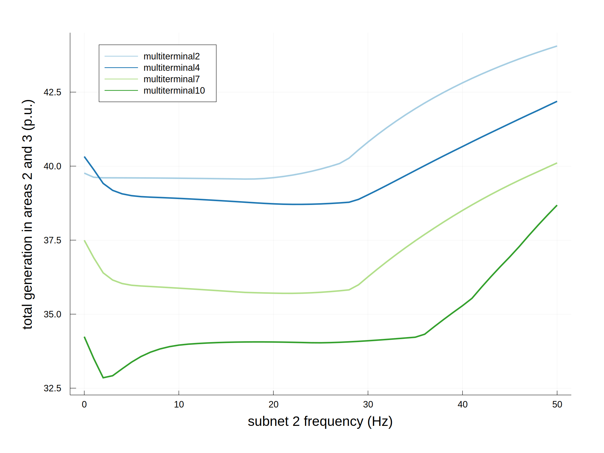
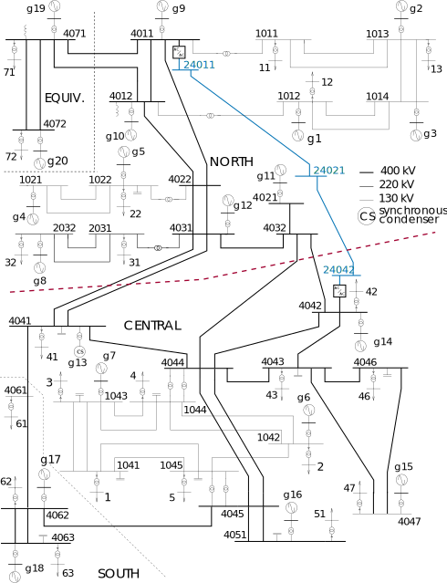
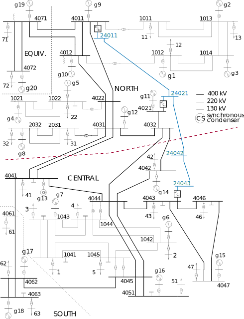
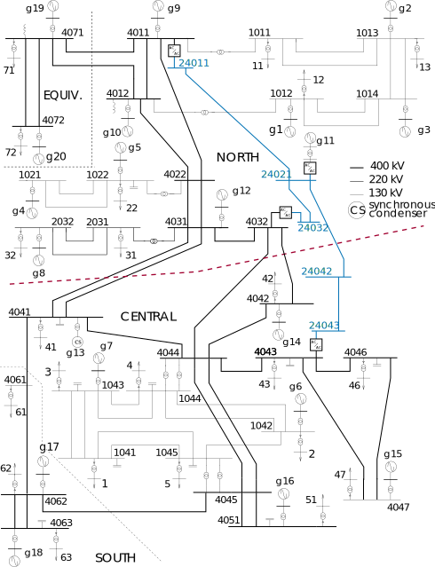
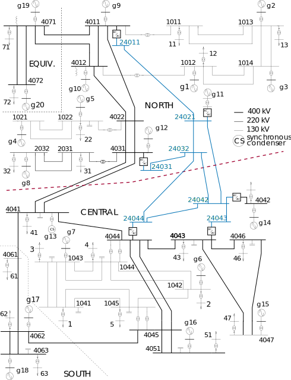

Analyze the frequency dependence of performance under different upgrades
Here we consider multi-terminal upgrades in the Nordic system, consisting of a corridor or meshed collection of lines upgraded to a low frequency AC subnetwork. We consider three such upgrades, represented with the data in the folders multiterminal2, multiterminal4, multiterminal7, and multiterminal10 in test/data/nordic_fault_multiterminal. For each upgrade, we solve the OPF with a fixed LFAC subnetwork frequency and repeat over a range of frequencies, saving the resulting quantities as series versus the LFAC frequency. For this, we use frequency_ranges. The fmin and fmax arguments allow us to specify a range of frequencies for each step if their values are different. Here, we keep the frequency fixed at each step by making them equal, and we use a step size of 1 Hz. The multi-terminal upgrades used in this example are shown as network diagrams below.
using VariableFrequencyOPF
base_folder = "test/data/nordic_fault_multiterminal"
folders = [
"multiterminal2",
"multiterminal4",
"multiterminal7",
"multiterminal10"
]
fmin = 0:1:50
fmax = 0:1:50
lfac_subnet = 2
results_dicts = Array{Dict}(undef, length(folders))
output_plots = Array{Any}(undef, length(folders))
for (i,f) in enumerate(folders)
(results_dicts[i], output_plots[i]) = VariableFrequencyOPF.frequency_ranges(
fmin,
fmax,
lfac_subnet,
base_folder*"/$f/",
"areagen",
[("frequency (Hz)",2)],
[];
gen_areas=[2,3],
area_transfer=[1,2],
no_converter_loss=true
)
endThis plots the results versus frequency for each upgrade. To plot all upgrades together, we use the results dictionaries we've saved and plot the values with plot_results_dict_line.
subnet_arr = results_dicts[1]["subnet"][1]
x_axis = ("frequency (Hz)", 2)
output_folder = "results/nordic_fault_multiterminal/sweep_comparison/"
vert_line = ([],"")
horiz_line = ([],"")
xlimits = []
ylimits = []
output_plot_label = ("","")
series_labels = folders
# plot the results
VariableFrequencyOPF.plot_results_dict_line(
results_dicts,
subnet_arr,
x_axis,
output_folder,
vert_line,
horiz_line,
xlimits,
ylimits,
output_plot_label,
series_labels=series_labels,
plot_infeasible_boundaries=false,
color_palette=:Paired_12
)One resulting plot shows the objective value, generation in the Central and South areas, versus the LFAC frequency for all four upgrades: 
The multi-terminal upgrades used in this example are the following:
|  |  |  |  |
|---|---|---|---|
| Multiterminal upgrade 2 | Multiterminal upgrade 4 | Multiterminal upgrade 7 | Multiterminal upgrade 10 |
{kind=link}
{kind=link}
{kind=link}
{kind=link}